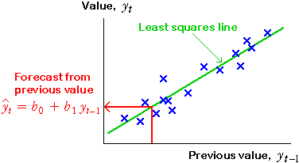

If you don't want to print now,
Least squares
Moving averages provide a good description of the trend in a time series but are less useful for forecasting future values. For forecasting, it is better to describe trend with a mathematical equation,
trend = function ( time )
The simplest such model is a linear model,
trend = b0 + b1 time
b0 and b1 can be estimated by least squares to minimise


Recoding the years
The large intercept in the example above is avoided if the years are recoded so that some year within the range of the data becomes "year 0".
trend = b0 + b1 (time − 1960)
This model is equivalent and gives the same fitted values and forecasts.

Quadratic models
If the trend in a time series is nonlinear, a linear model should not be used. A simple model that can explain some simple types of curvature is a quadratic model:
trend = b0 + b1 time + b2 time2
This has three parameters that can be adjusted to improve the fit of the model. Residuals are again defined as
ei = yi − trendi
and the least squares estimates of b0, b1 and b2 are the values that minimise the residual sum of squares,
Σ ei2

Using linear and quadratic models for forecasting
After fitting a linear or quadratic model by least squares, forecasting is simply a matter of inserting future time values into its equation.
Dangers in forecasting
It is important to realise that the forecasts from linear or quadratic models are highly dependent on the type of line or curve that is chosen for modelling. The dangers are the same as those for extrapolation in bivariate relationships.
Beware forecasting many time periods into the future — the shape of the actual trend line might be different from your model.
Cubic and higher-degree polynomial models
If a quadratic model does not adequately describe the shape of the trend in a time series, it is tempting to try to further increase the order of the polynomial,
trend = b0 + b1 time + b2 time2 + b3 time3 + ...
This kind of polynomial model can also be fitted by least squares.

A polynomial of degree 3 or 4 often provides a fairly smooth description of trend but polynomial models usually behave badly (with sudden increases or decreases) beyond the data points, so...
Polynomial models of degree greater than 2 should not be used for forecasting.
Residuals
The residuals for a time series model subtract the trend from the values and are called the detrended values,
ei = yi − trendi
If the model under consideration fits well, there should be no pattern in the residuals — each should have the same chance of being positive or negative.
Autocorrelation of detrended values
In many time series, there is a tendency for unusually large values to be followed by other similar values, even after detrending the series,
ei = yi − trendi
Any tendency for these residuals to be followed by others of similar size is called autocorrelation and can be described by the correlation coefficient between pairs of adjacent residuals.

In this example, the autocorrelation is 0.71, so there is some tendency for values above the trend line to be followed by others on the same side of it.
Positive autocorrelation has an important impact on forecasting — if the most recent value is above the trend line, we should forecast the next value will also be above it.
Predicting a value from the previous value
In a time series without trend, positive autocorrelation means that values tend to be followed by others of similar size.

We can try to predict yt from its previous value by fitting a straight line by least squares to this scatterplot,
yt = b0 + b1 yt−1
This is a type of auto-regressive model, and is usually called an AR(1) model.

Forecasting further into the future
The model only directly predicts one time period into the future,
 t = b0 + b1 yt − 1
t = b0 + b1 yt − 1
but we can predict further into the future using:
 t + k = b0 + b1
t + k = b0 + b1  t + k −1
t + k −1
Forecasting when there is trend
The method described in the previous page works well if there is no trend in the time series. If there is trend, we should remove it before using an AR(1) model. The steps for forecasting a future value are therefore...
(There are more efficient ways to do steps 1 and 2 together, but these are beyond the scope of an introductory course.)
Dangers of over-interpretation
Very strong autocorrelation in a time series can result in apparent trends, even when there is no real trend underlying the series. Autocorrelation and trend are especially difficult to distinguish in short time series. You should therefore be wary of extrapolating a trend into the future if there is high autocorrelation.
Many time series change in cycles, with increases and decreases that cannot be explained by a smooth trend line.
Seasonal patterns
Some cycles are seasonal. Seasonal patterns are distinguished by a period that repeats exactly — for example, monthly data has a period of exactly 12 months.
Seasonal patterns are not usually referred to as 'cyclical'.
Cyclical patterns
Other cycles repeat much less regularly. Sun-spot activity has cycles of approximately 11 years, and the 'business cycle' can be anywhere between 3 and 10 years. In both cases, different cycles are not exactly the same length.
The AR(1) method can be used to obtain forecasts for cyclical data with irregular cycle lengths.
We will not distinguish cyclical patterns from other forms of autocorrelation here.
Seasonal data
In monthly or quarterly data, there is often a pattern of peaks and troughs that repeats in a similar way each year. Daily data often show a pattern that repeats each week, and hourly data often have a daily pattern. These are all called seasonal patterns.

Seasonal patterns make it difficult to assess whether a particular month's value is unusually high or low.
Regular seasonal patterns can be projected into the future and are important in forecasting.
Moving averages
Daily data have a cycle length of 7 days, so each 7-point running mean averages exactly one value from each day of the week. If the seasonal pattern was to repeat exactly every week, 7-point moving averages will be the same every day, as illustrated below.

A 7-point moving average therefore removes a weekly seasonal pattern from daily data. In general,
For seasonal data with cycle length n, an n-point moving average removes the seasonal effect.
Even cycle lengths
Most seasonal data have an even cycle length, so centred moving averages must be used. For example, with quarterly data we should use a 4-point moving average:

The diagram below removes a monthly seasonal effect with 12-point moving averages.

Limitations of moving averages for removing seasonal variation
Estimating a common seasonal effect
If the underlying seasonal pattern in monthly data repeats in the same form each year, the residuals from 12-point moving averages can be used to estimate the seasonal pattern. The seasonal effect for any month is estimated as the average of the residuals for that month.
Removing the seasonal effect
Having estimated a common seasonal effect that describes how far each month's value is (on average) from the overall trend, we can subtract this seasonal effect to obtain deseasonalised data. This is often called seasonally adjusting the data.

The time series can be deseasonalised in this way for all years (including the most recent data).
The deseasonalised data not only shows the trend in the series more clearly, but also shows individual months that are substantially different from the usual seasonal pattern.
Four components of a time series
The variation in a time series can be split into four separate components:
Deseasonalised = Trend + Cyclical + Residual
(Of course, the seasonal effect is only present for seasonal data.)


Forecasting the individual components
The seasonal, trend and cyclical components can be separately forecast into the future. Putting them together provides a forecast for the time series values,
Forecast = Seasonal effect + Trend forecast + Cyclical forecast